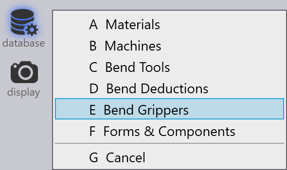
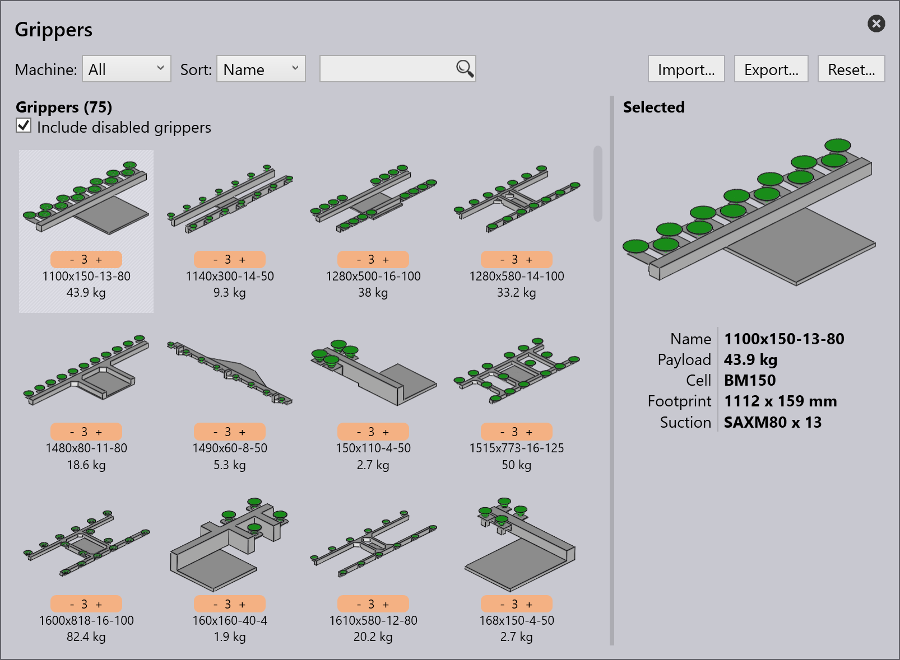

Gripper database
There are different grippers available for use with the robot. You can usually import these gripper models from ARV files, and you can configure the inventory of grippers so FluxRobot CAM knows the actual grippers you have on your shopfloor. A FluxRobot CAM installation comes with a set of commonly-used grippers already pre-installed, but this set can be edited.

Click on the Database icon and choose the Bend Grippers option to open the Grippers inventory panel.
This panel displays all the grippers that have been installed. From this set of all the installed grippers, some of them can be enabled for use. Only these enabled grippers will show up in the gripper selection lists, and only these will be used by FluxRobot CAM during computation.

-
Adjust the priority level of gripper by clicking the -/+ buttons on the priority menu.
-
Use Sort options to arrange the grippers by different parameters. For ex., sort by priority to see the highest priority gripper shown at the top.
-
Priority level 1 is high and 5 is low.
-
-
Use the Reset button to select, or de-select all the grippers, and to delete any unused grippers.
| Proceed with caution. If you do not have the ARV files, you will not be able to restore the original grippers. |
Enable/disable grippers
From the gripper inventory, you can disable any gripper that you do not want to use.
-
Ctrl+Click on a gripper to disable.
-
The disabled grippers will be greyed-out.
-
-
Select the Include disabled grippers to see all the disabled grippers.
The following topics are further explained in detail: